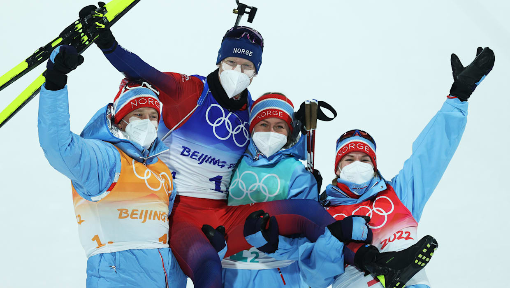
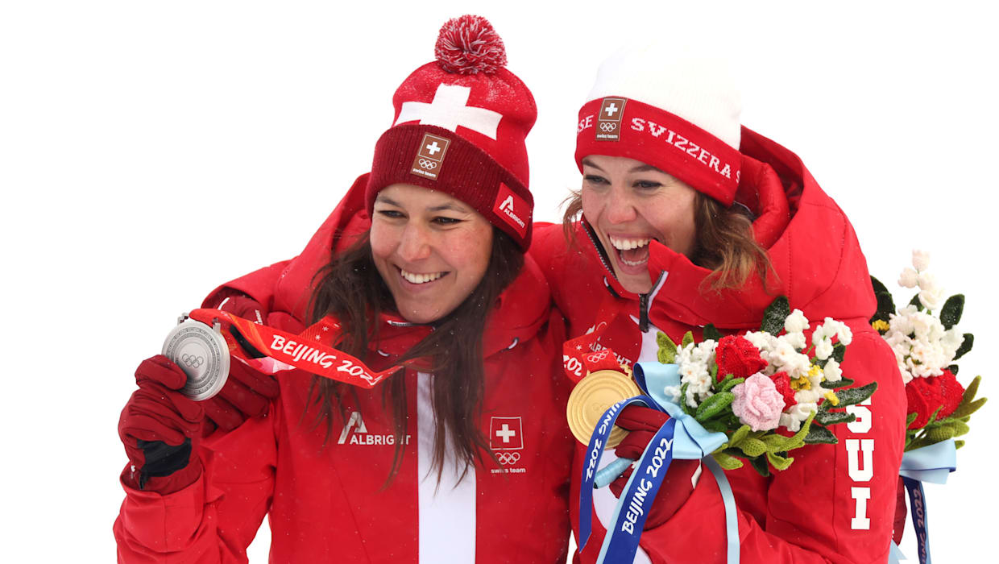

Highlight 3: Biathlon

Biathlon bei den Olympischen Winterspielen Beijing 2022 war voller Spannung und Dramatik. Der Weltcup-Führende aus Frankreich, Quentin Fillon Maillet, trug sich mit seinen fünf Medaillen in fünf Rennen in die olympischen Geschichtsbücher ein.
Die Norwegerin Marte Olsbu Roeiseland kann als die Biathlon-Königin von Peking bezeichnet werden. Die 31-Jährige gewann drei Gold- und zwei Bronzemedaillen. Der ältere der Boe-Brüder, der 33-jährige Tarjei, feierte die erfolgreichsten Olympischen Spiele seiner Karriere - er hatte in Sotschi 2014 Gold und in PyeongChang 2018 Silber in der Herren-Staffel geholt, aber in Beijing 2022 gewann er zwei Goldmedaillen in der Staffel sowie Bronze und Silber im Einzel. Der jüngere Bruder Johannes Thingnes Boe hatte einen noch besseren Auftritt und gewann vier Goldmedaillen - zwei in den Staffeln und Einzeltitel im 10-km-Sprint und 15-km-Massenstart - sowie Bronze im 20-km-Einzelrennen.
In der Verfolgung der Damen über 10km kam es zu einem der dramatischsten Momente des Biathlon-Wettbewerbs, als die Norwegerin Ingrid Landmark Tandrevold, die bereits auf dem Weg zu Bronze war, auf der letzten Kurve gegen die Wand lief. Sie erreichte das Ziel auf Platz 14 und brach zusammen. Dort wurde sie medizinisch versorgt.
Bei der Staffel der Herren gab es noch mehr Drama. Das ROC führte die meiste Zeit des Wettkampfs, bevor ihnen die Goldmedaille entglitt, nachdem Eduard Latypov vier seiner fünf Schüsse im Stehendschießen verfehlt hatte, so dass er zwei Strafrunden absolvieren musste - nur um am Ende Bronze zu gewinnen. Die norwegischen Biathleten verbreiteten den #StrongerTogether-Geist gegenüber Latypov, indem der Sieger des Rennens, Tarjei Boe, den ROC-Biathleten auf Instagram tröstete. Der ehemalige Biathlet Emil Hegle Svendsen, der sich in Sotschi 2014 in einer ähnlichen Situation befand, twitterte: "Meine Gedanken & Gefühle auch an Ed Latypov, ich war dort (2014). Passt gut auf ihn auf, russisches Volk."
Die nächsten Highlights
|
Das 1. Highlight

|
Highlight 2: Biathlon
|
Zurück zur Startseite
|